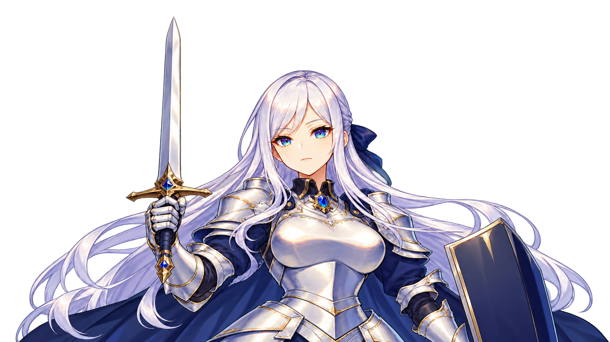
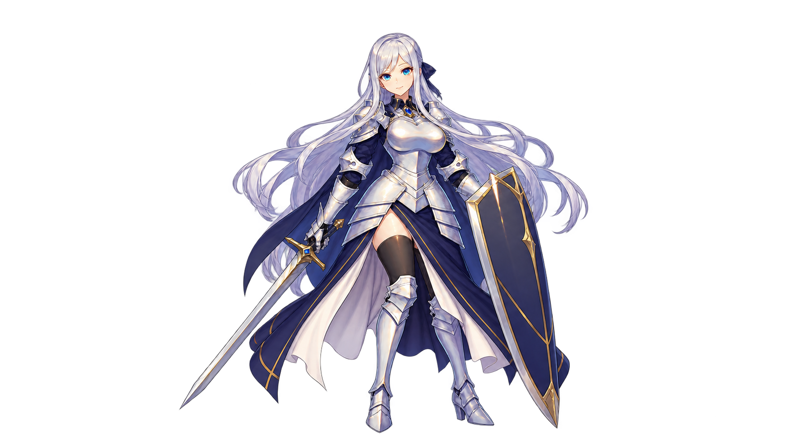

새 시험 · T1
검을 세운 서약
시작 컷 시험 · 전체 연출 미완료
영상 정보를 불러오는 중입니다.
검을 세운 새 원화에서 시작해 작은 움직임만 시험했습니다. 25프레임에서 양눈을 뜬 자세와 얼굴의 가시성, 손·코등이·폼멜의 구분을 확인했습니다.
검을 들어 올리는 동작이나 각성기의 절정 효과는 아닙니다. 짧은 컷의 리듬과 후반 장면·별도 효과를 이어 붙이는 작업은 남아 있습니다.
25프레임 전체 검수판 보기
이전 시험 · T0
짧은 얼굴 동작 시험
요청 동작 미통과
영상 정보를 불러오는 중입니다.
양눈을 감고 유지하는 동작을 시험했지만, 눈꺼풀이 비대칭으로 움직이고 처음 표정으로 돌아왔습니다. 이 동작은 채택하지 않았습니다.
이후 T1에서는 처음부터 양눈을 뜨고 검을 세운 원화를 사용했습니다. 작은 움직임을 먼저 확인하고, 컷 전환과 별도 효과로 각성기의 인상을 만드는 방향입니다.
25프레임 전체 검수판 보기
기존 영상 · v1
처음 전달받은 각성기 영상
비교용 · 수정 필요
영상 정보를 불러오는 중입니다.
검을 세우는 서약 동작이 나오지 않고, 방패가 상체를 가리며 형태와 색도 달라집니다. 빛의 절정은 약 3.7초 뒤에 나와 전체 약 2.5초 목표와 맞지 않습니다.
한 번의 긴 생성 대신 컷마다 적절한 시작 자세를 준비합니다. 작은 움직임과 카메라·빛 효과의 합성을 나누는 방향입니다.
상체 가림 분석판 보기
분석판의 자동 gap 수치는 검출 오류가 있어 판정에 사용하지 않았습니다. 그림으로 가림을 확인한 자료입니다.
다음 제작 방향 · 첫 시험안
서약, 방패 고정, 은빛 전개
3D 준비와 복귀를 포함해 전체 약 2.5초를 목표로 합니다. 가운데 2D 구간은 세 컷으로 나눕니다. 아래 도식은 구도와 시간 배분을 설명하는 콘티이며 실제 원화·완성 영상이 아닙니다.
 콘티판을 불러오는 중입니다.
콘티판을 불러오는 중입니다.시작 원화 두 장을 받아 T1 컷A 시험까지 진행했습니다. 전체 각성기 편집·효과·음향·실제 PC 검증은 아직 남아 있습니다.
받은 자료 · 2026. 10. 11.
시작 원화 두 장을 받았습니다
두 장 모두 1672×941 투명 배경 PNG입니다. 검을 세운 상반신을 T1의 시작 컷에 사용했습니다. 전신 원화는 후반 컷의 참고이며, 초기 콘티의 방패 고정 자세와는 다릅니다.
서약 상반신 · T1에 사용


서약 원화를 불러오는 중입니다.전신 원화 · 후반 컷 참고


전신 원화를 불러오는 중입니다. 초기 원화 요구판을 불러오는 중입니다.
초기 원화 요구판을 불러오는 중입니다.